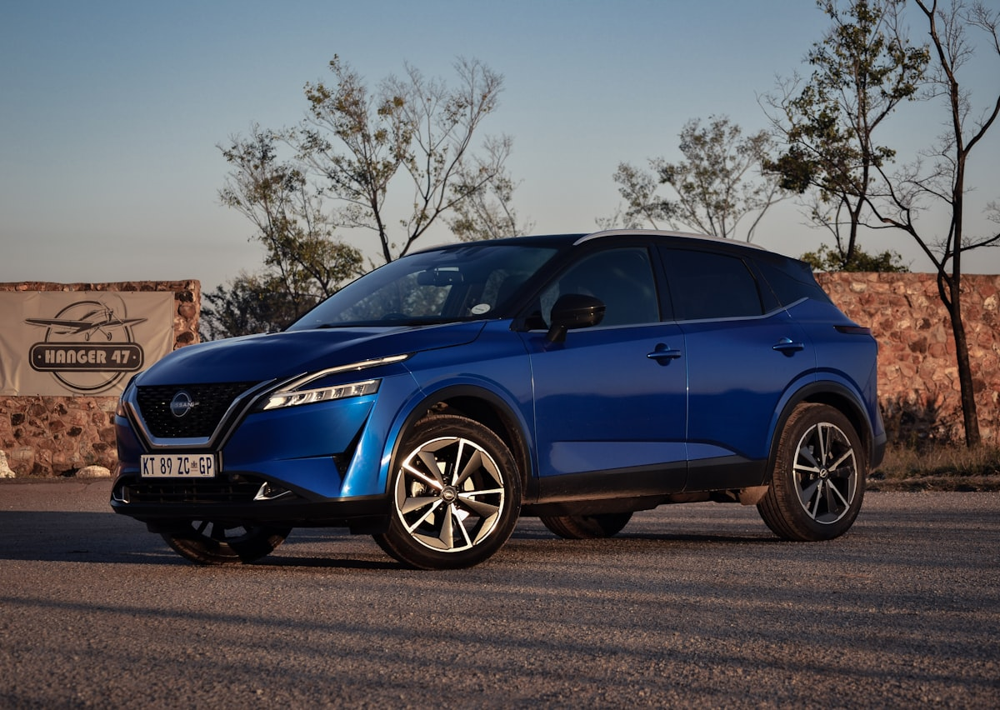

Ключі Nissan в Ужгороді — дублікат, виготовлення, програмування

Виготовляємо ключі Nissan для всіх моделей — від простих механічних ключів старого Almera до Nissan I-Key (Intelligent Key) з HITAG-AES на сучасних Qashqai J12, X-Trail T33, Juke F16. Леза NSN14 та NSN11, чіпи ID46 (PCF7952), HITAG-2, HITAG-AES.
Потрібен ключ Nissan?
Зателефонуйте — скажемо точну ціну та чи є потрібна заготовка
З якими моделями Nissan ми працюємо
- Nissan Qashqai (J10, J11, J12)
- Nissan X-Trail (T31, T32, T33)
- Nissan Juke (F15, F16)
- Nissan Note
- Nissan Almera
- Nissan Murano
- Nissan Pathfinder
- Nissan Patrol
- Nissan Navara
- Nissan Leaf
- Nissan Micra
- Nissan Tiida
Ціни на ключі Nissan в Ужгороді
| Послуга | Ціна | Час |
|---|---|---|
| Дублікат механічного ключа NSN14 | від 1800 грн | 30 хв |
| Викидний ключ з чіпом ID46 | від 2200 грн | 45 хв |
| Nissan I-Key (Qashqai J11, X-Trail T32) | від 3500 грн | 1–2 год |
| Nissan I-Key HITAG-AES (Qashqai J12, X-Trail T33) | від 4500 грн | 2 год |
| Програмування при повній втраті | від 3500 грн | 1–3 год |
| Заміна корпусу I-Key | від 700 грн | 20 хв |
* Точна вартість залежить від моделі, року випуску та комплектації. Уточнюйте по телефону.
Чому Seven Keys для Nissan?
- Усі покоління Nissan від 2003 року до 2025
- Підтримка Nissan I-Key (Intelligent Key) усіх поколінь
- Чіпи ID46, HITAG-2, HITAG-AES — у наявності
- Леза NSN14, NSN11 — основні профілі
- Корпуси Qashqai, X-Trail, Juke — на складі
- Прив'язка через OBD-II — без зняття BCM
Як замовити ключ Nissan
- Зателефонуйте і назвіть модель, рік випуску та VIN (бажано)
- Ми перевіримо наявність заготовки і назвемо точну ціну
- Приїжджайте до майстерні (вул. Фединця 39, Ужгород) або викликайте майстра з обладнанням
- Виготовляємо і програмуємо ключ при вас — у середньому за 1–2 години
- Перевіряємо роботу: запуск, центральний замок, кнопки
Часті запитання про ключі Nissan
Скільки коштує I-Key для Nissan Qashqai?
Для Qashqai J11 — від 3500 грн (HITAG-2). Для Qashqai J12 (2021+) — від 4500 грн (HITAG-AES).
Чи робите ключ для Nissan X-Trail T33?
Так. T33 використовує найсучасніший I-Key з HITAG-AES — від 4500 грн з програмуванням.
Чи можна виготовити ключ для Nissan без оригіналу?
Так. Програмуємо новий I-Key через OBD або через зчитування BCM. Від 3500 грн.
Чи буде Auto-старт працювати з новим ключем?
Так. Якщо ключ запрограмований правильно, всі функції (Auto-Start, Push Start, безключовий доступ) працюють.
Скільки I-Key можна прив'язати до одного авто?
До 4-5 ключів на більшості моделей Nissan.
Не знайшли свою модель?
Працюємо з усіма Nissan — зателефонуйте, підкажемо рішення